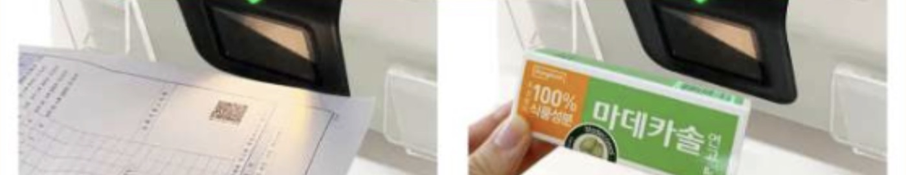

약국 키오스크 문의가 오면, 약사님을 키오스크 원격지원 요청 화면까지 안내하고 코드를 불러 드려 원격으로 도와드립니다. 아래 순서대로 진행합니다.

약사님께 키오스크 오른쪽 위 ① 톱니바퀴(설정)를 눌러 달라고 안내합니다.
비밀번호 4자리를 입력해 주세요.
비밀번호 창 맨 아래 ① ‘원격지원 요청’을 누릅니다. 비밀번호는 안 넣어도 됩니다.
창이 안 열리면 브라우저 팝업을 허용하고 다시 누릅니다.
새 창에 뜬 ① 6자리 코드를 약사님께 불러 드립니다.
② 만료시간은 5분입니다. 지나면 ‘입력 시간이 만료되었습니다.’가 뜨고 [새 코드 받기]를 누르면 새 코드가 나옵니다.
상담원이 불러 준 인증코드 6자리를 입력해 주세요.
약사님이 ① 6자리를 넣고 ② [연결]을 누르면 바로 연결됩니다.
‘인증코드가 맞지 않습니다’가 뜨면 숫자를 다시 불러 드립니다.
키오스크 위쪽에 ① 기기 정보와 ② ‘원격 지원 중 · 해제’가 보입니다. 손님은 키오스크를 그대로 씁니다.
① 자동 해지까지 30분이 줄어듭니다. ② 약국명 · 태블릿 아이디가 맞는지 먼저 확인하고 키오스크 화면을 보며 도와드립니다. 화면에 ‘키오스크와 연결되었습니다.’가 잠깐 뜹니다.
지원이 끝나면 상담원이 [연결 종료](5단계 ③)를 누릅니다. 상태가 ① ‘연결 종료’로 바뀌면 [닫기]로 창을 닫습니다.
약사님이 키오스크에서 [해제]를 누르거나 30분이 지나도 연결이 끝납니다.
| 상황 | 상담원이 할 일 | 약사님께 할 말 |
|---|---|---|
| 원격지원 창이 안 열려요 | 브라우저 팝업 허용 후 버튼 다시 클릭 | 잠시만 기다려 주세요, 다시 연결해 볼게요. |
| 5분이 지나 코드가 만료됐어요 | 창에서 [새 코드 받기] → 새 코드 확인 | 새 번호 불러 드릴게요. |
| 키오스크에 ‘인증코드가 맞지 않습니다’ | 같은 코드 천천히 다시 불러 주기 | 숫자 다시 불러 드릴게요. 하나씩 눌러 주세요. |
| 키오스크에 ‘유효시간이 지난’ · ‘이미 사용한 인증코드’ | 창에서 [새 코드 받기] | 새 번호로 다시 해 볼게요. |
| 키오스크에 ‘인터넷 연결이 끊겨’ | 키오스크 인터넷 확인 안내 후 [새 코드 받기] | 키오스크 인터넷 선이나 와이파이를 확인해 주시겠어요? |
| 지원 중에 연결이 끊겼어요 | 창에서 [새 코드 받기] → 새 코드로 다시 연결 | 연결이 끊겨서 다시 연결할게요. |
| 30분이 지나 끊겼어요 | 약국 상세에서 버튼을 다시 눌러 새로 연결 | 시간이 지나 끊겼어요. 다시 연결해 드릴게요. |